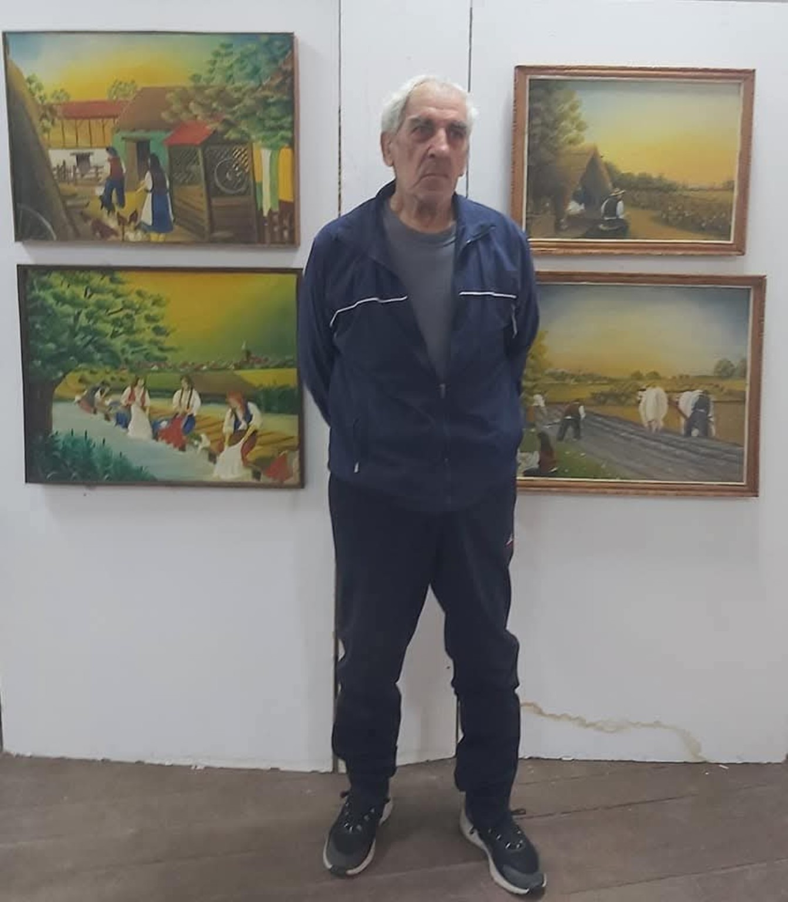
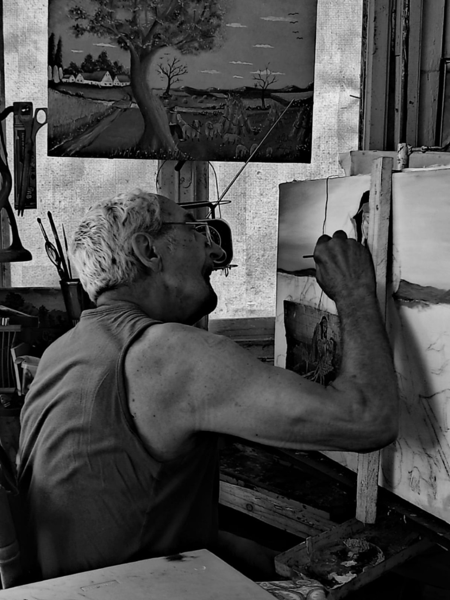
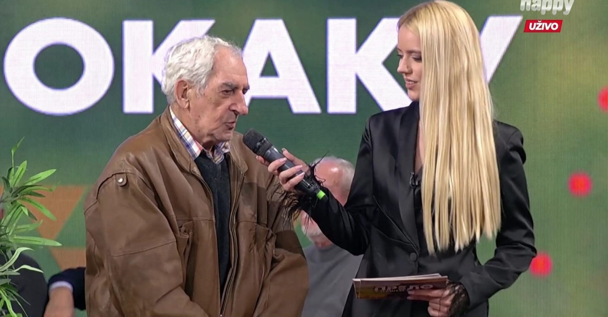

2022
Prva samostalna izložba
Dom kulture „29. novembar“, Starčevo. Izloženo je 24 slike naive, sa motivima banatskih i srbijanskih sela i života u njima.

Starčevo · Srbija
Više od četiri decenije slikarstva, uspomena i motiva iz života pretočenih u ulje na platnu.
Pogledaj galerijuO umetniku

Nikola Lapić u ateljeu
Nikola Lapić rođen je 5. jula 1948. godine u Starčevu, gde živi od rođenja. Slikarstvom se bavi više od četiri decenije.
Prvi dodir sa slikarstvom imao je još u osnovnoj školi. Ozbiljnije se slikarstvu posvetio radeći u „Utvi“, gde je bio član slikarske sekcije i učio različite likovne postupke. Posebno je zavoleo tehniku ulje na platnu, dok se njegov izraz kreće između naive i realizma.
Njegovi motivi često potiču iz sećanja na detinjstvo i mladost — banatska sela, svakodnevni život, ljudi, priroda i prizori jednog vremena. Kako je sam rekao, motivi mu dolaze direktno iz glave, a slikanjem želi da sačuva uspomene na prošla vremena.
Među umetnicima koji su na njega ostavili uticaj navodi Paju Jovanovića i Uroša Predića. Iako dugo nije bio sklon eksponiranju, na nagovor prijatelja priredio je svoju prvu samostalnu izložbu 2022. godine u Starčevu.
Njegov rad karakterišu toplina, jednostavnost i lični odnos prema motivu — slike nisu samo prikazi mesta i ljudi, već i sećanja na život koji je umetnik lično poznavao.
Galerija
Motivi Starčeva, banatskih predela, ljudi i uspomena — slike nastale iz ličnog sećanja i pogleda na svet.
Atmosfera sa izložbe
Fotografije sa otvaranja izložbe — ljudi, razgovori, muzika i slike u prostoru.
Otvaranje izložbe · Starčevo
Izložbe i nastupi
Dom kulture „29. novembar“, Starčevo. Izloženo je 24 slike naive, sa motivima banatskih i srbijanskih sela i života u njima.
Opširan razgovor o detinjstvu, životu u Starčevu, poslu i više od četiri decenije posvećenosti slikarstvu.
Nikola Lapić predstavlja Starčevo i svoje slikarstvo na nacionalnoj televiziji.

Novembar 2023.
Gostovanje posvećeno Starčevu i njegovim stanovnicima, među kojima je bio i Nikola Lapić, slikar naive.
U štampi i na internetu
Izabrani tekstovi, intervjui i objave o njegovom radu. Klikom na naslov otvara se originalni tekst.
Tekst o prvoj samostalnoj izložbi i 24 predstavljena rada.
19.10.2022 · RTVPrilog Radio-televizije Vojvodine o izložbi i njegovom slikarskom radu.
06.12.2022 · Starčevačke novineOpširan intervju sa Nikolom Lapićem o životu, porodici i slikarstvu.
2023 · StarčevoTekst o gostovanju Starčevaca u emisiji „Prelo iz našeg sokaka“, među kojima je bio i Nikola Lapić.
Arhiva
Izabrani članci i intervjui sačuvani kao deo umetničke arhive Nikole Lapića. Kliknite na naslovnicu da otvorite ceo članak.
Razgovor o Starčevu, uspomenama i životu kroz koji su nastajali motivi na njegovim slikama.
Opširan razgovor o detinjstvu, porodici, poslu, Starčevu i njegovom putu kroz slikarstvo.
Članak o prvoj samostalnoj izložbi Nikole Lapića u Starčevu.
Ako vas zanima neka slika, želite više informacija ili želite da pošaljete poruku Nikoli Lapiću, možete to učiniti ovde.